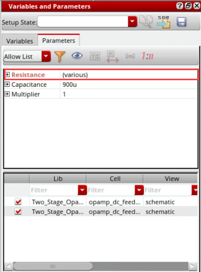
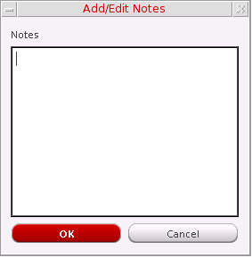
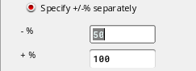

5
Working with Device Instance Parameters
You can use Component Description Format (CDF) instance parameters to set component values for simulation. The scope of a CDF parameter value depends on which Analog Expression Language (AEL) functions you use to refer to the parameter.
This chapter covers the following topics:
- Creating Device Instance Parameters
- Changing the Value of Device Instance Parameters
- Specifying Values of Device Instance Parameters
- Creating Matched Device Parameters
- Creating Ratio-Matched Device Parameters
- Deleting a Device Parameter
- Enabling and Disabling Parameters
- Adding Notes to Parameters
- Viewing Parameters by Property and Object Names
- Filtering Device Instance Parameters
- Creating Custom Device Filters
- Changing the Order of Device Parameters
- Disabling Callbacks on Swept Device Parameters
- Adding or Modifying Specifications for Parameters and Design Variables
- Creating Parameter Ranges
- Working with Parametric Sets
Creating Device Instance Parameters
Perform the following steps to create instance parameters for the design associated with your test:
-
In the Parameters section on the Setup assistant, click Click to add parameter.
Alternatively, right-click Parameters and choose Add Parameter.
The schematic associated with the test is displayed in a new tab in the ADE Explorer window. The menu changes to that of Virtuoso Schematic Editor and theParameterizationworkspace is set.
In this workspace, the Variables and Parameters assistant is displayed. The Parameters tab on the Variables and Parameters assistant is also opened.
-
On the schematic, select one or more device instances.
To select more than one instance, hold down the Shift key and click each instance one by one or by dragging a selection box around a set of instances.
The parameter properties of the selected devices are listed in the upper half of the Parameters tab of the Variables and Parameters assistant.
- Expand a property section to view the device names.
-
Right-click an instance name and choose Create Parameter.
Alternatively, click Create Parameter on the toolbar.
A parameter is created for the selected property of the selected device instance. The details of the added parameter appear in the lower half of the Variables and Parameters assistant.
The device instance parameter name is displayed in the Parameter column and value is displayed in the Value column. You can hover above an instance name to view the related test information along with the parameter name and prompt name for that instance.
Note the following:
-
The parameter is also displayed in the Parameters section in the Setup assistant, as shown below.
The value to be used for the parameter is same as the value of the parameter specified in the schematic, which is also shown in the Design Value column in the lower half of the Parameters tab on the Variables and Parameters assistant. You can specify a different value to be used while running simulation. For more details, refer to Changing the Value of Device Instance Parameters. -
If required, you can also view specific instance parameters by using the filters available in each column header of the lower half of the Variables and Parameters assistant.
-
The parameter is also displayed in the Parameters section in the Setup assistant, as shown below.
Additional Points to Note
-
The default view for the Parameters tab is
View by Property. That is why when you select an instance in the schematic, by default, a list of property names is displayed. However, you can change the view to list the instance names by clicking the toggle on the toolbar of the Parameters tab, as shown below.
You can also set the default view by setting thedefaultParametersViewByenvironment variable. -
If you have selected more than one instance in the schematic and each instance has a different design value for a property, the value is shown as
(various).
 -
When the view is set to
View by Property, you can select multiple devices in the schematic and use the Create Parameter command to create parameters for all the selected devices simultaneously. For example, if you have selected two instances,M1andM2, on the schematic. In the Variables and Parameters assistant, right-clickLength, and choose Create parameter. TheLengthparameter is created for bothM1andM3simultaneously. -
You can also create matched or ratio-matched parameters by using the Match Parameters
 or Ratio Matched Parameters
or Ratio Matched Parameters  commands on the toolbar. For more details, refer to Creating Matched Device Parameters and Creating Ratio-Matched Device Parameters.
commands on the toolbar. For more details, refer to Creating Matched Device Parameters and Creating Ratio-Matched Device Parameters. - If the devices have a large number of parameter properties, you can use filters to show only the relevant set of properties.
-
When you create parameters, the lower half of the Variables and Parameters assistant displays the instance name, parameter name, parameter value, and the value of property in the design. You can also show the names of library, cell, and view of the instances. Right-click any column name in the lower half of the assistant and choose Show Lib, Cell, View. Three more columns are displayed, as shown below.
You can show or hide any one of these three columns using the commands in the context-sensitive menu for this section of the assistant. If required, you can even edit the names of library, cell, and view in this table. ADE Explorer validates the existence of the newly specified library, cell, and view. If found, the details are updated in the assistant. Otherwise, an error is displayed in the CIW. - When you open a saved ADE Explorer view, if the cellview details of the instance parameters are different, the Variables and Parameters assistant shows all the columns to display the cellview details.
Changing the Value of Device Instance Parameters
Perform the following steps to change the value of a device instance parameter for a simulation without affecting the value on the schematic:
-
On the upper half of the Parameters tab on the Variables and Parameters assistant, click the value of the device instance parameter you want to change and type a new value.To view only the parameters in the Parameters tab, see Viewing Parameters by Property and Object Names.For example, change the value of the Length parameter from
45nto50n.
The instance parameter and its new value (50n) appear in the lower half of the Parameters tab on the Variables and Parameters assistant. The simulator uses this value when you click Run Simulation.
Alternatively, perform the following steps:
-
Right-click the instance parameter whose value you want to change and choose Create Parameter.
The instance parameter and its value appear in the lower half of the Parameters tab on the Variables and Parameters assistant. -
Double-click the value in the lower half of the Parameters tab and type a new one.
The simulator uses this value when you click Run Simulation.
The parameter is also displayed in the Parameters section in the Setup assistant.
Important Points to Note
- You can add parameters only using the Parameters tab of the Variables and Parameters assistant. Parameters cannot be directly added in the Setup assistant.
- At any time, you can reset value of the parameter to its original value which was set in the design schematic. For this, in the lower half of the Parameters tab, right-click a parameter name and choose Set to Design Value.
Sweeping Pcell Parameters
You can sweep Pcell parameters in the same way as described above for other device parameters. The sweep values are used to create multiple design points for simulations. During netlist creation, ADE Explorer and ADE Assembler create subcircuits for each swept Pcell parameter value.
This feature is helpful for advanced node designs that contain Pcells with parameters to adjust circuit topology changes, such as the number of stacked components represented by a device. You can run local or global optimization to identify the best value for the Pcell parameters to optimize your designs.
Specifying Values of Device Instance Parameters
You can specify a device instance parameter as a sweep parameter. The settings for a sweep parameter override the settings of an instance parameter that has the same name as the sweep parameter.
Perform the following steps to specify an instance parameter as a sweep parameter:
- Create instance parameters for the design associated with your test. See Creating Device Instance Parameters for more information.
-
Perform one of the following steps to define sweep values for an instance parameter:
-
In the lower half of the Parameters tab in the Variables and Parameters assistant, double-click the value of the parameter and specify a sweep value.
Alternatively, in the Setup assistant, double-click the value of the parameter and specify a sweep value. -
In the lower half of the Parameters tab in the Variables and Parameters assistant, double-click the value of the parameter, then click the ellipses button to open the Parameterize form and define a parameter specification.
Alternatively, in the Setup assistant, double-click the value of the parameter, then click the ellipses button to open the Parameterize form and define a parameter specification.
See Adding or Modifying Specifications for Parameters and Design Variables for more information.
-
In the lower half of the Parameters tab in the Variables and Parameters assistant, double-click the value of the parameter and specify a sweep value.
To specify a valid sweep value, ensure that:
- The value is not a blank string or does not contain a whitespace
- If contains a range, it has the start, step, and stop values separated by colons, commas, spaces, or a combination of these
- If specified as an expression, it is written in correct SKILL syntax and contains balanced parenthesis and quotes
- If contains a file path, it is enclosed in double quotes so that it is not evaluated
Creating Matched Device Parameters
You can create matched parameters for device matching such that one device’s parameters track with another’s.
Perform the following steps after creating device instance parameters, to specify two or more devices to match:
-
On the schematic, click to add the first device, then Shift+click to add one or more additional devices.
As you click, each device and its parameters appear on the upper half of the Parameters tab of the Variables and Parameters assistant. - On the upper half of the Parameters tab of the Variables and Parameters assistant, select (highlight) the device you want as the primary device, against which all other devices are matched.
-
Click Match Parameters
on the toolbar of the Variables and Parameters assistant.
The instance name of the primary device for which matched parameters exist appears in the lower half of the Parameters tab, in the Variables and Parameters assistant.
-
Optionally, to view the devices whose parameters are matched to the primary device, click the plus sign to the left of an instance name in the lower half of the Parameters tab.
The value of a matched parameter appears in the Value column as shown below, to indicate the matching relationship:
For example, in the above figure, the valueprimaryInstName/deviceParam@MP1/fw@for instanceMN1indicates that thefwparameter of instanceMP1is matched to thefwparameter of instanceMN1(the primary device).
Creating Ratio-Matched Device Parameters
You can create ratio-matched parameters for device tracking such that one device’s parameters track with the ratio of another’s.
Perform the following steps to specify two or more devices to ratio-match:
-
On the schematic, click to add the first device. Next, Shift+click to add each additional device.
As you click, each device and its parameters appear in the panel on the upper half of the Parameters tab of the Variables and Parameters assistant. - Select a device in the upper section on the Parameters tab of the Variables and Parameters assistant.
-
Click Ratio Matched Parameters
.
The ratio-matched parameters are created. A row is created in the lower section of the assistant and name of the primary device (that appeared on top in the upper section of this assistant) and the parameter name is displayed in that.
For example, if you select two devices,MP1, andMN1, and create a ratio-matched parameter for the parameterlength, finger width and total width a new row displayingMN1andfwis created, as shown below.
-
Optionally, to view the devices whose parameters are ratio-matched to the primary device, click the plus (+) sign to the left of an instance name in the lower half of the Parameters tab.
The value of a ratio-matched parameter appears in the Value column, as shown below, to indicate the matching relationship:
For example, in the above figure, the value 1.25*ratio*primaryInstName/deviceParam@M1/l@for instanceM2indicates that thelparameter of instanceM2is ratio-matched to thelparameter of instanceM1(the primary device).
Deleting a Device Parameter
Perform the following step to delete a parameter:
-
In an expanded Parameters section on the Setup assistant or on the lower part of the Parameters tab of the Variables and Parameters assistant, right-click the parameter you want to delete and choose Delete Parameter.
In case you wish to delete the parameters that are not being used in the design anymore, right-click the Parameters section in the Setup assistant and choose Delete Unused Parameters from the context menu. For example, consider the following setup.
On choosing the Delete Unused Parameters command, the parameterPORT3/rgets deleted since the resistanceZ3is does not exist in the design anymore.
Enabling and Disabling Parameters
You can enable or disable parameters before starting your simulation. This allows you to specify the set of parameters you want to be used for a particular simulation.
Perform the following step to enable/disable a parameter:
-
In the Parameters section on the Setup assistant or the Parameters tab on the Variables and Parameters assistant, select/deselect the check box to the left of the parameter.
Alternatively, right-click the parameter and choose Enable/Disable from the context-sensitive menu.When a parameter is disabled, its value given on the Setup assistant is not used for simulation, but its definition is retained in the Parameters tree on the Setup assistant and the Parameters tab on the Variables and Parameters assistant. The value specified for the CDF parameter on the instance will be used for simulation.
Perform the following step to enable/disable all parameters:
-
On the Setup assistant, select/deselect the check box to the left of Parameters.
Alternatively, right-click the Parameters tab of the Variables and Parameters assistant and choose Enable All/Disable All.
Perform the following step to toggle the enabling or disabling of one or more parameters:
-
On the Parameters tab of the Variables and Parameters assistant, select one or more parameters, right-click and choose Toggle Enable/Disable.
The enabled parameters are disabled and the disabled parameters are enabled.
Adding Notes to Parameters
If you need to save some additional reference information about a device parameters, you can add notes for it. For this, perform the following steps:
-
In the Setup assistant, expand the Parameters section, right-click the parameter for which you want to add notes, and choose Notes.
The Add/Edit Notes form is displayed.
 -
In the Notes field, add notes for the device parameter.
-
Click OK.
The note is added to the parameter. This is displayed in the tooltip for the parameter and is saved with the setup state.
Viewing Parameters by Property and Object Names
By default, in the upper half of the Parameters tab in the Variables and Parameters assistant, the parameters are displayed by property names, as shown below.

Perform the following step to view the parameters by object names:
-
Right-click the upper part of the Parameters tab and choose View by Object.
Alternatively, click ( ) to toggle the view types.
The view changes to a section of objects.
defaultParametersViewBy environment variable.Filtering Device Instance Parameters
Perform the followings step to filter the device instance parameters that appear on the upper half of the Parameters tab on the Variables and Parameters assistant:
-
In the Filter drop-down list, select one of the following:
Displays parameters specified in the list that you can edit by using the Filter Setup form.
Displays all editable CDF parameters with non-nil CDF values.
Only those device instance parameters which meet the filter specification appear in the upper half of the Parameters tab on the Variables and Parameters assistant.
By default, the Allow List filter shows the parameters set by thedefaultParametersAllowListenvironment variable. You can edit this list in either of the following ways:-
By editing the
defaultParametersAllowListenvironment variable. -
By using the Filter Setup form which is displayed when you click Allow List Filter (
) on the toolbar.You can use the
*wildcard character to specify the parameter names in the Allow List filter. For example,*inger* res*.
The Allow List Filter command is enabled only when the Filter drop-down list is set toAllowList. For other filter types, this is not applicable.If you have defined any custom device filter using theaxlRegisterCustomDeviceFilterfunction, the name of that filer also appears in the drop-down list. See Creating Custom Device Filters for more information. However, it is recommended to use theAllow Listfilter to customize the list of parameters to be displayed.
-
By editing the
Creating Custom Device Filters
Perform the following steps to create a custom device instance parameter filter:
-
Write a procedure to define your custom filter.
For example, you want to filter out theTotal Width,ThresholdandS/D Metal Widthparameters for all instances of thepmos2vcell, write a procedure as shown below:(procedure (myCustomFilter inst simulator)
(let (paramList libName cellName instName)
(setq instName inst->name)
(setq cellName inst->cellName)
(setq libName inst->libName)
(setq paramList list())
;;Example filter for hiding Total Width, Threshold and S/D Metal Width
;;parameters for instances of cells whose names start with pmos2v
(rexCompile "^pmos2v")
(if (rexExecute cellName) then
(setq paramList
(list
(list "fw" (get inst "fw"))
(list "l" (get inst "l"))
(list "fingers" (get inst "fingers"))
(list "m" (get inst "m"))
)))
paramList
)
)
You must specify the CDF parameter names and not the CDF prompt names in the procedure. For example, you must specify the CDF parameter namefwand not the CDF prompt nameFinger Widthin the procedure.You can also write procedures to filter parameters of instances starting with specific names (for example, all instances starting with the namePM), or to filter parameters of instances of cells in a library (for example, filter parameters of all instances of thepmos2vcell in thegpdk090library). -
Call axlRegisterCustomDeviceFilter as shown below:
axlRegisterCustomDeviceFilter "My Filter" 'myCustomFilter
The function returnstif the registration is successful; otherwise,nil.
My Filter appears in the Filter drop-down list.
To load your custom filters each time the program starts, you can declare and register them in your .cdsinit file.
When you select My Filter in the Filter drop-down list, the device parameters Total Width, Threshold and S/D Metal Width do not appear on the upper half of the Parameters tab on the Variables and Parameters assistant for the selected device instance(s).
Changing the Order of Device Parameters
When there are multiple parameters in the Parameters list of the Setup assistant, you can change the order in which they are listed. A change in the order of device parameters in this assistant changes the nesting of sweep points as well.
Perform the following steps in the Setup assistant to change the order of a parameter:
- Expand the Parameters section to view all the parameters.
-
Click a parameter name and drag it.
A blue indicator line appears at the location where you have moved it. The tooltip also shows the name of the parameter being moved.
Also, because all the parameters for a device are placed together, you cannot move only a single parameter for a device to another location in the list. Therefore, while you are moving a device parameter, all the other parameters for the device are also highlighted and moved, as shown below.
While you are dragging the parameters, you cannot place the device parameters in between the list of parameters for another device. If you drop the parameters in the midst of the list of parameters for another device, they are placed above the list if you are moving the parameters up, or below the list if you are moving the parameters down. - Drag the indicator line to the desired location and drop the parameter.
You can also select the parameters for more than one device and move them together.
Disabling Callbacks on Swept Device Parameters
By default, the program executes callbacks on device parameters that you sweep.
Perform the following step to disable callbacks on swept device parameters:
For more information about callbacks in parameter expressions, see “Triggering callbacks” in the
Adding or Modifying Specifications for Parameters and Design Variables
Perform the following steps to add or change the specification for a parameter or a design variable you want to sweep (vary):
-
Perform the following steps to open the Parameterize form and define a specification for parameters or design variables.
-
To add or change specifications for a parameter, right-click the parameter in the Parameters section of the Setup assistant or in the Parameters tab of the Variables and Parameters assistant and choose Edit Parameter.
Alternatively, double-click the Value field next to the parameter in the Setup assistant or in the Parameters tab of the Variables and Parameters assistant, then click the ellipses button. - To add or change specifications for a design variable, double-click the Value field next to the variable in the Setup assistant or in Variables tab of the Variables and Parameters assistant, then click the ellipses button.
The Parameterize form appears.
-
To add or change specifications for a parameter, right-click the parameter in the Parameters section of the Setup assistant or in the Parameters tab of the Variables and Parameters assistant and choose Edit Parameter.
-
Click Add Specification and choose one of the following from the drop-down menu:
Specifying an Inclusion List of Values
Perform the following steps to specify an inclusion list of values:
-
From the Add Specification drop-down menu, choose Inclusion List.
A row appears on the Parameterize form for defining the specification type you selected. The Inclusion radio button is selected. -
In the Values field, type a list of values you want to include in your sweep. You can separate the values in the list with either a comma or a space.
- Optionally, click Add Specification to add another parameter specification.
-
Click OK.
The list of values appears in the Value column, beginning and ending with the {Inclusion List} text string.
Specifying an Exclusion List of Values
One application of the exclusion list is to define a From/To parameter specification (see Specifying a Range of Values) and exclude some values from the range by defining an exclusion list.
Perform the following steps to specify an exclusion list of values:
-
From the Add Specification drop-down menu, choose Exclusion List.
A row appears on the Parameterize form for defining the specification type you selected. The Exclusion radio button is selected. -
In the Values field, type a list of values you want to exclude from your sweep. You can separate the values in the list with either a comma or a space.
- Optionally, click Add Specification to add another parameter specification.
-
Click OK.
The list of values appears in the Value column beginning and ending with the {Exclusion List} text string.
Specifying a Range of Values
Perform the following steps to specify a range of values and sweep through those values:
-
From the Add Specification drop-down menu, choose From/To.
A section appears on the Parameterize form for defining the specification type you selected.
- In the From field, type the starting value for your range.
- In the To field, type the ending value for your range.
-
From the Step Type drop-down menu, select how you want the simulator to step from one value to the next:
Steps taken according to a specified multiplier from the From value to the To value
-
Depending on the Step Type you selected, type the remaining value for your parameter specification in the field that appears:
Step Type Field that appears Value - Optionally, click Add Specification to add another parameter specification.
- Click OK.
Specifying Center and Span
Perform the following steps to specify a center value and a span value:
-
From the Add Specification drop-down menu, choose Center/Span.
A section appears on the Parameterize form for defining the specification type you selected.
- In the Center field, type the center value.
-
In the Span field, type a span value.
The simulator can vary your parameter between Center-Span and Center+Span according to the Step Type you select (next). -
From the Step Type drop-down menu, select how you want the simulator to vary the parameter value:
Steps taken according to a specified multiplier from Center
-Span/2 to Center+Span/2 -
Depending on the Step Type you selected, type the remaining value for your parameter specification in the field that appears:
Step Type Field that appears Value - Optionally, click Add Specification to add another parameter specification.
- Click OK.
Specifying Center and Span as a Percentage
Perform the following steps to specify a center value and a span percentage:
-
From the Add Specification drop-down menu, choose Center/Span%.
A section appears on the Parameterize form for defining the specification type you selected.
- In the Center field, type the center value.
-
In the Span field, type a span value.
The simulator can vary your parameter between and according to the Step Type you select (next). -
From the Step Type drop-down menu, select how you want the simulator to vary the parameter value:
-
Depending on the Step Type you selected, type the remaining value for your parameter specification in the field that appears:
Step Type Field that appears Value - Optionally, click Add Specification to add another parameter specification.
- Click OK.
Deleting a Parameter Specification
To delete a parameter specification, do the following:
- On the Parameterize form, right-click in the row or section for the parameter specification you want to delete and choose Delete Specification from the context-sensitive menu. (Delete Specification is the only item on this context-sensitive menu.)
To delete the last parameter specification listed in the form, do the following:
-
On the Parameterize form, click Delete Spec.
The last specification listed in the form is deleted. -
Click OK.
You can delete all but one specification in the form. If you want to delete the only remaining specification in the form, delete the values specified for the specification and click OK.
Creating Parameter Ranges
To specify the range for an already existing parameter,
-
Open the Variables and Parameters assistant and edit the parameter value manually, as shown in the figure below.
- Double-click in the parameter value row in the Setup pane and edit the parameter value manually.
- In the Variables and Parameters assistant, right-click one or more variables in the Parameters list for which you want to create parameter range and choose Create Parameter Range.
- Select the parameters and click the button.
-
Right-click the parameter and choose Create Parameter Range. The Create Parameter Range form appears.
-
In this form, you can specify parameter ranges in one of the following two ways:
-
Parameter range as percentage of the design value: This is the default way. In this case, the Percentage of design value option is selected and the parameter range is relative to the value of variable. If the variable is assigned any value in the Data View pane, that value is taken as a reference. If there is no value assigned to this variable in the Data View pane, the value for this variable is taken from the design.
By default, you can specify a common percentage value for both the upper and the lower limit in the +/- % field. The lower limit is the value of a parameter in the design minus the specified % of the same design value. Similarly, the upper limit is the value of a parameter in the design added to the specified % of the value of parameter in the design.
Alternatively, select the Specify +/- % separately option. When you select this option, the following fields appear in the form.
In these fields, you can specify separate % values for the upper and lower range limits. -
Parameter range with a specific minimum and maximum value: This option is used to specify specific minimum and maximum value for the parameter range. These values might not be relative to the value of a parameter in the design. To specify these values, select the Specify minimum/maximum values option. The Minimum Value and Maximum Value fields appear in the form.
Specify the minimum and maximum values of the parameter range in their respective fields.
-
Parameter range as percentage of the design value: This is the default way. In this case, the Percentage of design value option is selected and the parameter range is relative to the value of variable. If the variable is assigned any value in the Data View pane, that value is taken as a reference. If there is no value assigned to this variable in the Data View pane, the value for this variable is taken from the design.
-
Next, you can specify how to create intermediate values within the range. For this, you have the following two options in the drop-down list displayed in the lower section of the form:
- Step Size: Use this option to specify a step size between two steps. The tool automatically creates steps between the two outer limits of the range at a gap of the given step size. In this case, ranges of all the design parameters will have the same step size, but the number of step values will depend on the minimum and maximum values.
- Number of Step Values: Use this option to specify the number of step values to be created between the two range limits. The tool automatically calculates the required step size and creates the intermediate values. In this case, the number of step values will remain same for all the design parameters, but the step size will vary.
- Select the Limit to Integer Values option to specify that the step values should be only integer numbers. This would be required for parameters that cannot have decimal values, such as m-factor and number of fingers. When you select this option, parameter range is not created if the step values contain decimal values.
- Click OK
ADE Explorer creates the parameter ranges for all the parameters and updates the Setup and the Variables and Parameters assistants.
When the Variables and Parameters assistant is open in the schematic view and you select an instance to create a parameter, you can right-click the instance in the top area of the assistant and use the Create Parameter Range command to create a parameter as well as to apply a range of values for it.
Working with Parametric Sets
By default, ADE Explorer creates all the possible sweep combinations by pairing each value of a variable or parameter with all given values of the other variables or parameters. In parametric sets, a selected set of sweep combinations are created by picking values from the same ordinal position for all the variables or parameters in that parametric set. This reduces the number of design points, thereby, reducing the number of simulations.
You can create parametric sets when you need to run simulations for a specific set of sweep values for different parameters. This helps in saving the simulation run time.
Consider an example where two variables, cload and rload, are grouped together to create a parametric set, as shown in the figure below:
To view the sweep value sets that are run for this setup, open the Run Preview tab. The following three sweep value sets are created and displayed in the Points table.
The sweep value sets are created by picking values from the same ordinal position for all the variables or parameters in a parametric set. You can see that while running simulations, ADE Explorer created three design points, as shown in the figure above.
As compared to this, if the parametric sets are not created, ADE Explorer creates nine design points, where each value of rload is paired with all the three values of cload.
Creating Parametric Sets
To create a parametric set, do the following in the Setup assistant or the Variables and Parameters assistant:
-
Press the
Ctrlkey and select two or more variables that you want to group together. - Right-click and choose Group as Parametric Set.
-
If required, specify the sweep values for the variables. For different variables, you can specify sweep values in different formats. For example, you can specify values for variables, as shown below.
If you want to specify a sweep, the minimum number of values required for variable is 2. If the number of sweep points for variables in the parametric set are not the same, the number of design points will be run based on the minimum points specified in the variable value. In addition, when only one value is specified for a variable in the parametric set, then that variable is considered as a scalar. For example, consider you have the following variables specified in the parametric set:
In this case, the following two simulation points will be run:
The variable C is added in both the simulation points.
Consider another example in which you have two variables, rload and cload, in the parametric set with 6 and 4 values, respectively. In this case, the minimum number of points of both the variables will be run, which is 4.
Important Points to Note
Note the following changes in the Setup assistant and the Variables and Parameters assistant:
- The variables or parameters in a parametric set are bound as a group.
- When you create a parametric set, the list of variables is realigned to display all the variables or parameters of a group together.
-
Each parametric set is highlighted with a different color, as shown below.
-
When you group two or more device parameters together, the tool automatically identifies matched parameters and includes them in the parametric set. Consider an example. From the Parameters list, select two variables, M3/w and M10/w and add them to a parametric set, as shown below.
A parametric set is formed and two more variables M4/w and M9/w are also added to that set. This is because m4/w and M9/w are matched with M3/w and M10/w, respectively.
- When you move the mouse over any variable in a parametric set, the tooltip shows that the variable is part of a parametric set.
- You cannot create a parametric set by including a mix of variables and parameters.
- If a parametric set is specified for global variables in ADE Assembler, then all the variables that are the part of that parametric set must have same number of variable values.
Adding a Variable to a Parametric Set
To add a variable to an existing parametric set:
- Right-click a variable and choose Add to Parametric Set.
- From the list of existing parametric sets shown in the sub-menu, select the name of the parametric set to which you want to add the parameter.
The variable is added to the specified parametric set. In addition, all the variables and parameters are rearranged to display all variables or parameters of a group together.
Removing a Variable from a Parametric Set
To remove a variable from a parametric set:
The variable is removed from the parametric set and moved to its original location in the list.
Ungrouping Parametric Sets
To ungroup the parametric set:
The group is dissolved and the variables are moved back to their original location in the Variables or Parameters list.
Enabling or Disabling Parametric Sets
You can disable or enable all parametric sets present for design variables in the Setup assistant.
To disable all parametric sets:
After the parametric sets are disabled, the variables are moved back to their original location in the list. If the parametric sets are disabled, you can enable all the sets together. To do this, right-click Design Variables and choose Enable All Parametric Sets. All the parametric sets become visible again.
Return to top